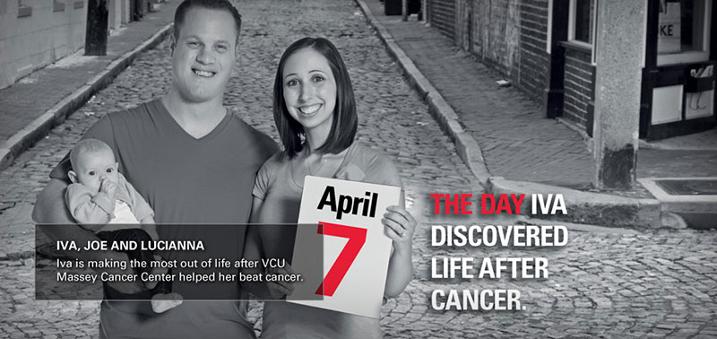

@@include('breadcrumbNav.html')


Life and love after cancer
A collection of stories of survivorship and hope
HOW ARE YOU LOVING LIFE AFTER CANCER?
Five years after VCU Massey Cancer Center helped her defeat cancer, Iva Petrosino is embracing a second chance at life. She found love with Joe and married him, and they are now discovering just how sweet life can be with their new daughter Lucianna. If you are a cancer survivor—and that includes every cancer patient from the moment of diagnosis—we want to know how you are loving life after cancer? Please share your story with us.